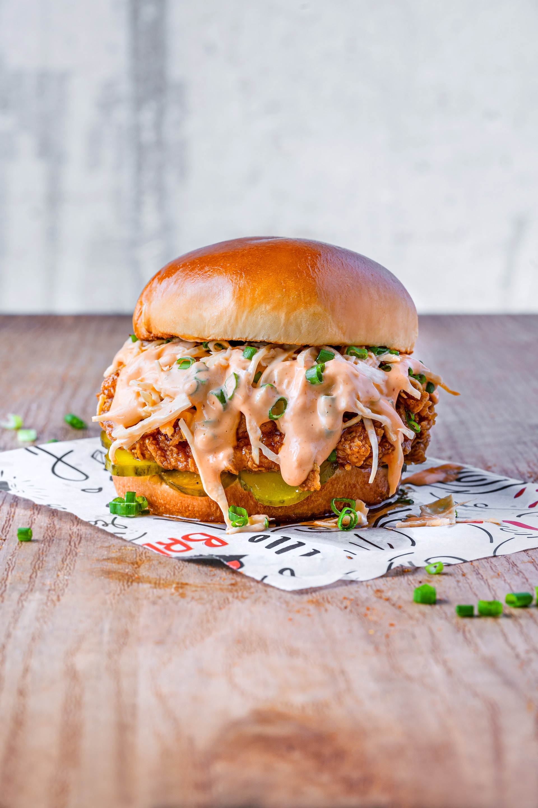

Chicken Burger

Ingredients:
For the Chicken Patties:
- 1 pound ground chicken
- 1/4 cup breadcrumbs
- 1/4 cup grated Parmesan cheese
- 1/4 cup finely chopped onion
- 2 cloves garlic, minced
- 1 teaspoon dried oregano
- 1 teaspoon dried basil
- 1/2 teaspoon salt
- 1/4 teaspoon black pepper
- 1 egg, beaten
For Assembly:
- Burger buns
- Lettuce leaves
- Sliced tomatoes
- Sliced red onions
- Pickles
- Your favorite cheese (optional)
- Condiments (mayonnaise, ketchup, mustard)
Instructions:
- Prepare the Chicken Patties:
- In a large bowl, combine ground chicken, breadcrumbs, Parmesan cheese, chopped onion, minced garlic, oregano, basil, salt, pepper, and beaten egg.
- Mix the ingredients thoroughly until well combined.
- Divide the mixture into equal portions and shape them into burger patties.
- Cook the Chicken Patties:
- Heat a grill pan or skillet over medium heat.
- Cook the chicken patties for about 5-6 minutes per side or until they are cooked through and have a golden brown crust.
- If you prefer, you can also grill the patties on an outdoor grill.
- Assemble the Chicken Burgers:
- Toast the burger buns on the grill or in a toaster until they are lightly golden.
- Place a lettuce leaf on the bottom half of each bun.
- Add a chicken patty on top of the lettuce.
- Layer with sliced tomatoes, red onions, pickles, and your choice of cheese.
- Add Condiments:
- Spread your favorite condiments on the top half of the burger bun. This could include mayonnaise, ketchup, mustard, or a special sauce.
- Complete the Burger:
- Place the top half of the bun over the condiments to complete the burger.
- Serve:
- Serve the chicken burgers hot with your favorite side dishes, such as sweet potato fries or a side salad.
Back